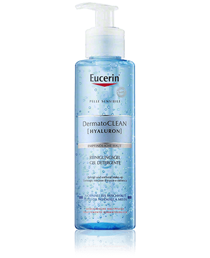

Dermocosmética
Sección dermocosmética
La dermocosmética ofrece una amplia gama de productos para el cuidado
de la piel mejorando la apariencia dermatológica de la misma, para
tratar afecciones no patológicas; es por ello que ofrecemos marcas
como Eucerin, Vichy, Sensilis, Apivita entre otras.
Conoce nuestras marcas de productos ofertados
Eucerin AtopiControl es una gama de productos dermocosméticos que cuidan la piel seca e irritable y, también, la piel atópica durante las fases inactivas y cuando se producen brotes agudos. Todos ellos están clínica y dermatológicamente probados a la hora de reducir la sequedad, la desescamación y la tensión a la vez que alivian el picor y en todos está probado que son compatibles con la piel atópica.
CUIDADO DE LA PIEL Con más de 90 años de experiencia e innovación, los Laboratorios Vichy están a la vanguardia del cuidado de la piel y se comprometen a utilizar ingredientes eficaces y seguros respaldados por la ciencia. Descubra nuestra gama de productos para el cuidado de la piel formulados para conseguir una piel con un aspecto saludable y radiante.
Hemos creado Sensitive Skin Lab, el laboratorio farmacéutico donde diseñamos rituales para el cuidado de la piel sensible a través de nuestro expertise en dermocosmética. Seleccionamos con exquisito cuidado todos nuestros ingredientes, consiguiendo así fórmulas respetuosas con la piel sensible con toda la sensorialidad de la alta cosmética.
APIVITA ofrece gamas específicas de productos de belleza con acción múltiple para cubrir todas las necesidades del cuidado de la piel. Desde limpiadores faciales e hidratación diaria hasta productos reafirmantes y antiedad. Sus fórmulas innovadoras de cosmética natural tratan la piel, dejándola luminosa y con un aspecto saludable. Explora nuestra amplia gama de limpiadores y tónicos faciales, sérums y aceites, cremas, exfoliantes y mascarillas faciales para crear tu rutina natural del cuidado de la piel.